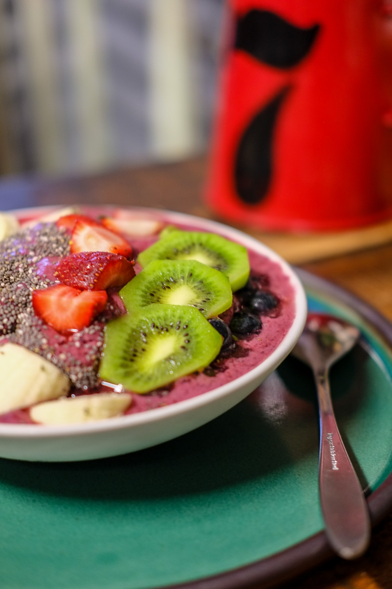

KWAÇÁI
Saúde e harmonia com a natureza
Benefícios do açaí
Combate o envelhecimento

Derruba o colesterol

Com origem na região Norte do país, diz a lenda que lá havia uma tribo com muitos habitantes, e por isso estava ficando cada vez mais difícil alimentar todos. Essa região hoje é a cidade de Belém, no Estado do Pará. O Cacique daquela época, Itaki, então tomou uma decisão drástica que chocou todos os integrantes da tribo: para controlar o número de habitantes e bocas para alimentar, decidiu que a partir de certa data todas as crianças que nascessem deveriam ser sacrificadas.
Um dia, essa decisão atingiua filha do Cacique, Iaçã, que teve de sacrificar sua filhinha, e Iaçã sofreu muito, chorando dias e noites. Com todo esse sofrimento, Iaçã elevou os pensamentos para Tupã, a divindade indígena, que se sensibilizou com o pedido de fazer com que seu pai achasse outra solução para o problema e a ouviu. Um dia ela ouviu um choro de criança, e viu sua filhinha embaixo de uma palmeira, e saiu correndo para abraçá-la, mas nesse momento a criança desapareceu. Inconsolável, Iaçã chorou tanto que morreu, e seu corpo foi encontrado na manhã seguinte abraçado a essa palmeira, com os olhos abertos, olhando para cima e com um leve sorriso.
Observando a direção para onde a filha falecida olhava, Itaki percebeu que no topo da palmeira havia um fruto escuro, tratava-se do açaí! O Cacique então fez com que os frutos fossem colhidos, e com eles foi feito um suco espesso e avermelhado, que alimentou toda a tribo e acabou com o problema da falta de alimentos.
.jpg)
O povo Kwazá tem uma língua classificada como isolada, como várias do Estado de Rondônia, sem relação com famílias linguísticas conhecidas. A maioria dos Kwazá vive na terra indígena Tubarão-Latundê, no município de Chupinguaia (RO), vizinhos dos Aikanã, sendo que uma parte deles se reconhece como Aikanã.
Seu habitat é na floresta alta, ao longo da cabeceira dos rios, mantendo contato com outras tribos, mesmo sem semelhanças na cultura e linguagem, através de alianças, casamentos e até guerras. Todo esse intercâmbio de culturas gerou uma grande semelhança nas culturas religiosa, espiritual e intelectual dos povos da região.
Antes do contato com a sociedade, os Kwazá tinham ritos de iniciação de adultos, jogavam bola de cabeça, pintavam o corpo de urucum e jenipapo, enfeitavam o corpo com colares, pulseiras, brincos e usavam capacetes de coco, dentes, conchas, tucum e penas. Atualmente, muitos desses costumes foram substituídos ou modernizados, adaptados nos pós contato com os brancos, mas muitos ainda mantém.